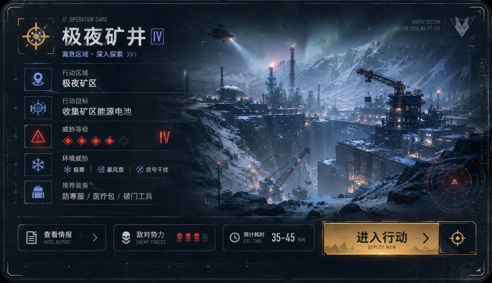

CASE 05 / INTERACTIVE PROTOTYPEUI/UX 交互演示
Tactical Interface Prototype
UIUX
DEMO
移动端提供横屏原型入口、热点说明和截图预览。建议横屏查看完整交互。
现在是竖屏：你可以先看交互亮点；旋转横屏后会进入大图热点体验。

点击发光热点切换界面
交互亮点
HOTSPOT保留原始 UI 图片资源，移动端通过 frame 等比缩放，不破坏热点相对位置。
战前准备类宽屏界面更适合横屏；竖屏不强塞，而是给说明和预览。

